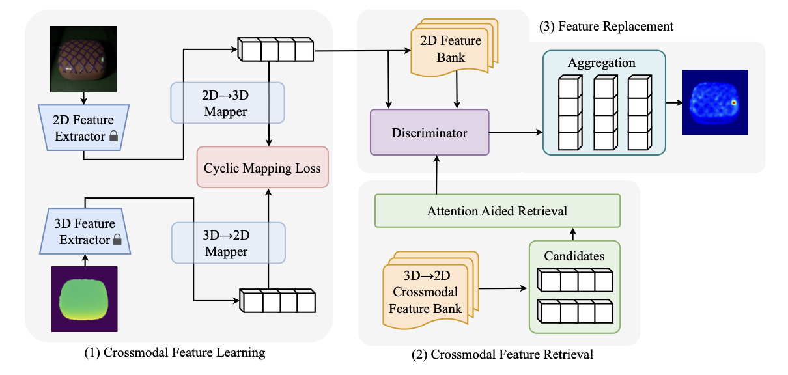
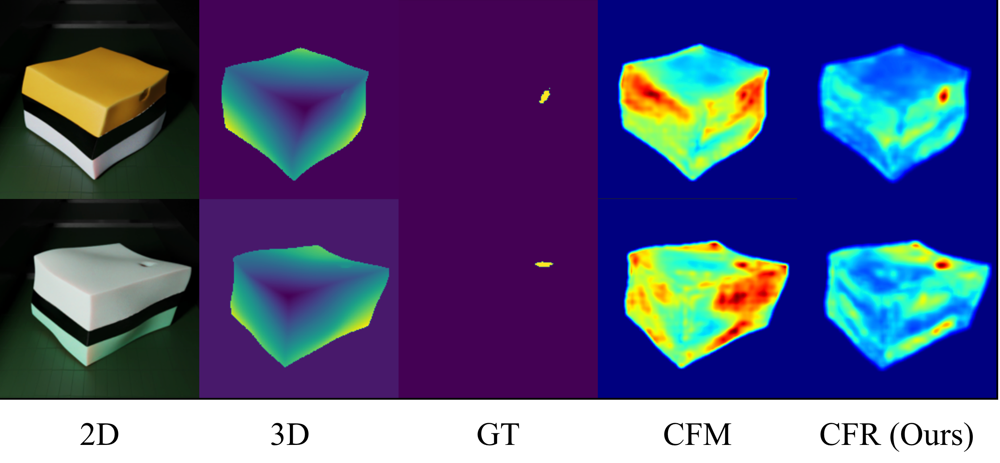
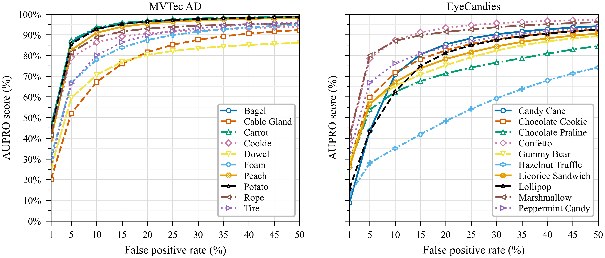
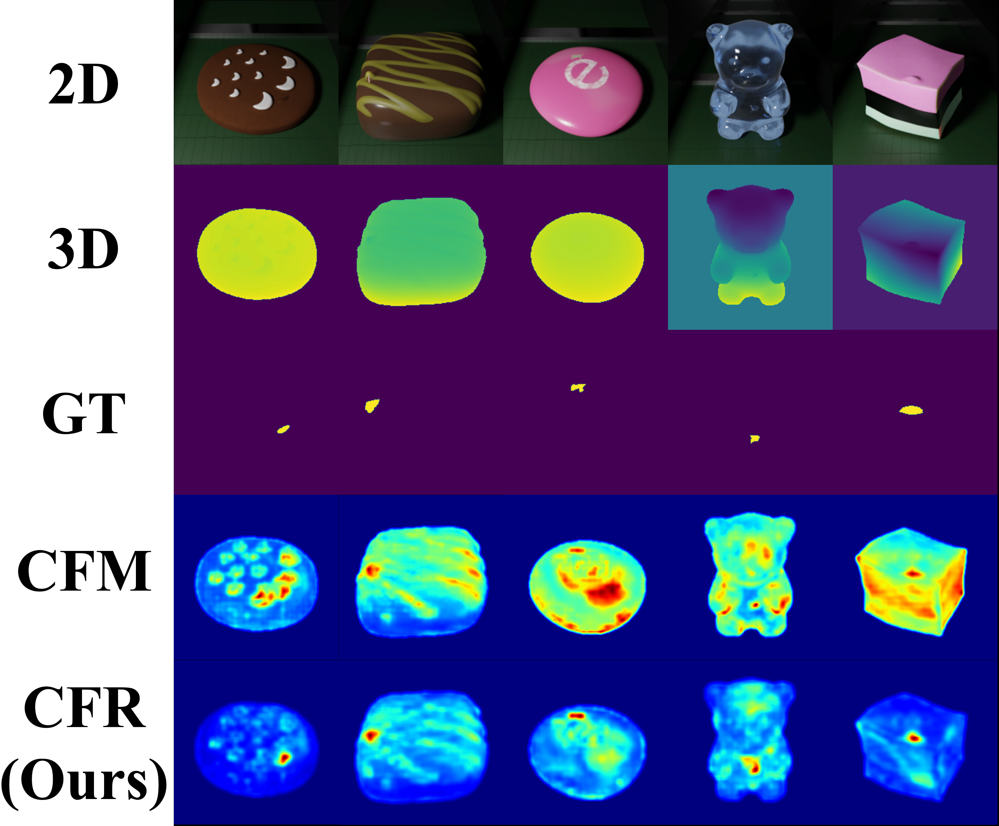

1
Crossmodal feature learning
Frozen RGB and 3D feature extractors feed lightweight cyclic mappings that align appearance and geometry while preserving bidirectional consistency.
Reconstruction-based multimodal anomaly detection suffers from one-to-many crossmodal mapping: a single 3D feature can correspond to multiple plausible RGB appearances. Deterministic regression collapses these valid targets into over-smoothed reconstructions, weakening anomaly discrimination. CFR learns bidirectional cyclic mappings for coarse crossmodal reconstruction, identifies unreliable reconstructed features, and selectively replaces them with high-confidence normal features at inference time.
CFR treats reconstruction and retrieval as complementary tools. Reconstruction provides an initial RGB-3D prediction, while retrieval is invoked only for ambiguous regions whose reconstructed features are unreliable.

Frozen RGB and 3D feature extractors feed lightweight cyclic mappings that align appearance and geometry while preserving bidirectional consistency.
Key-value crossmodal memory banks store paired normal features. A compact attention module retrieves candidates that are more reliable than collapsed reconstructions.
At inference time, CFR filters low-confidence reconstructed features and selectively replaces them with high-confidence normal features for sharper anomaly maps.
Under 1, 2, and 4-shot normal-only training, CFR improves both image-level detection and pixel-level localization on MVTec 3D-AD and Eyecandies.
| Dataset | Setting | I-AUROC | AUPRO@30% FPR | Observation |
|---|---|---|---|---|
| MVTec 3D-AD | 1-shot | 74.2 | 92.3 | Strong localization with only one normal sample per class. |
| MVTec 3D-AD | 4-shot | 80.5 | 94.2 | More normal samples improve both image and pixel metrics. |
| Eyecandies | 1-shot | 75.9 | 82.7 | Large gains on appearance-diverse objects with RGB-3D ambiguity. |
| Eyecandies | 4-shot | 77.9 | 84.7 | Maintains high localization quality in richer few-shot settings. |


One-to-many crossmodal correspondence makes deterministic RGB-3D regression brittle. CFR avoids forcing a single reconstruction to explain every valid appearance. Instead, it detects where reconstruction is uncertain and corrects only those feature locations.
In the ablation study, attention-aided retrieval improves the mean 1-shot I-AUROC from 75.1 to 81.3 and AUPRO@30% FPR from 82.6 to 85.4 on ambiguity-heavy categories.

The submission TeX currently uses anonymous placeholder authors, so the citation block keeps the author field anonymous until the public author list is ready.
@inproceedings{cfr2026,
title = {Remove the Ambiguity: Few-shot Multimodal Anomaly Detection Using Crossmodal Feature Replacer},
author = {Anonymous},
booktitle = {International Conference on Machine Learning},
year = {2026}
}